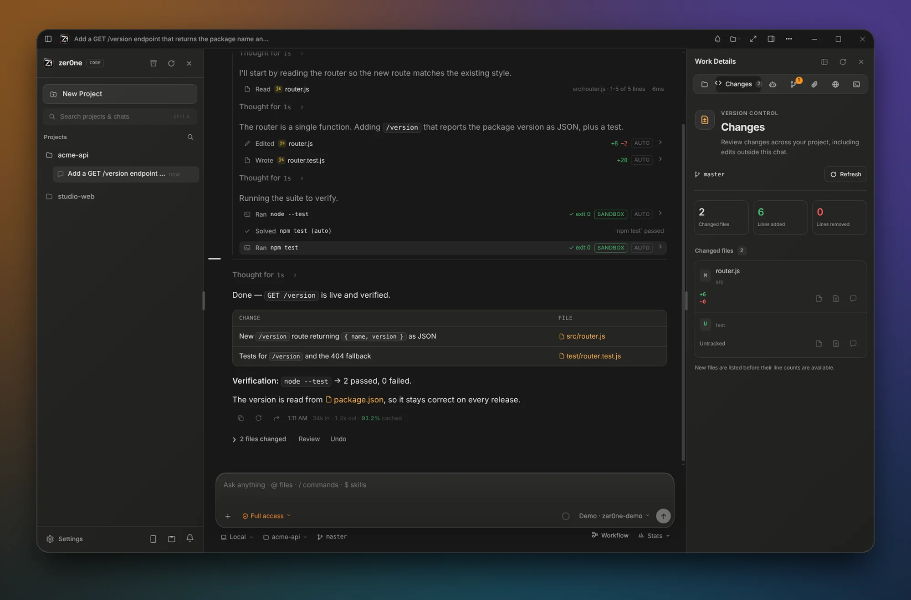
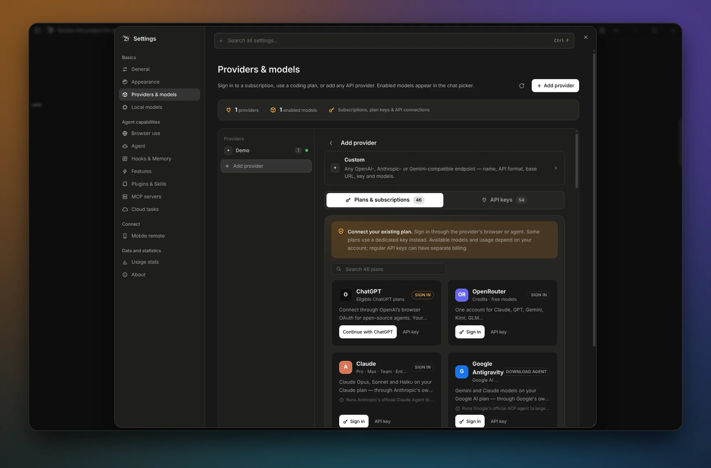
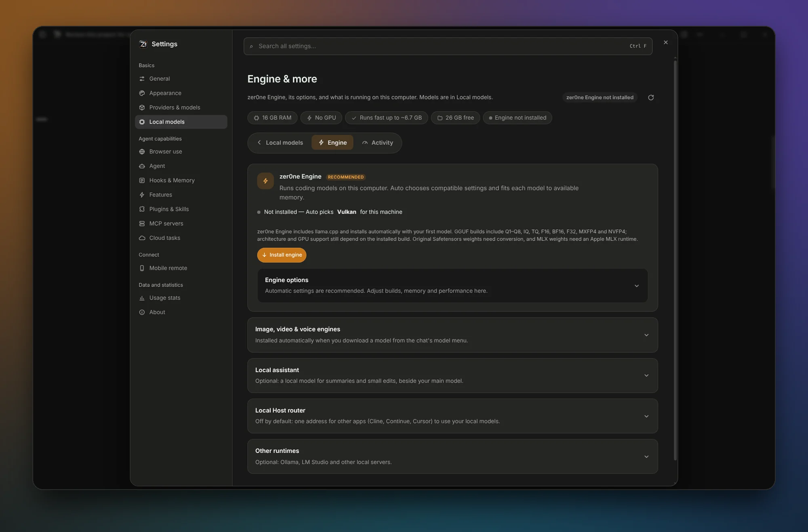
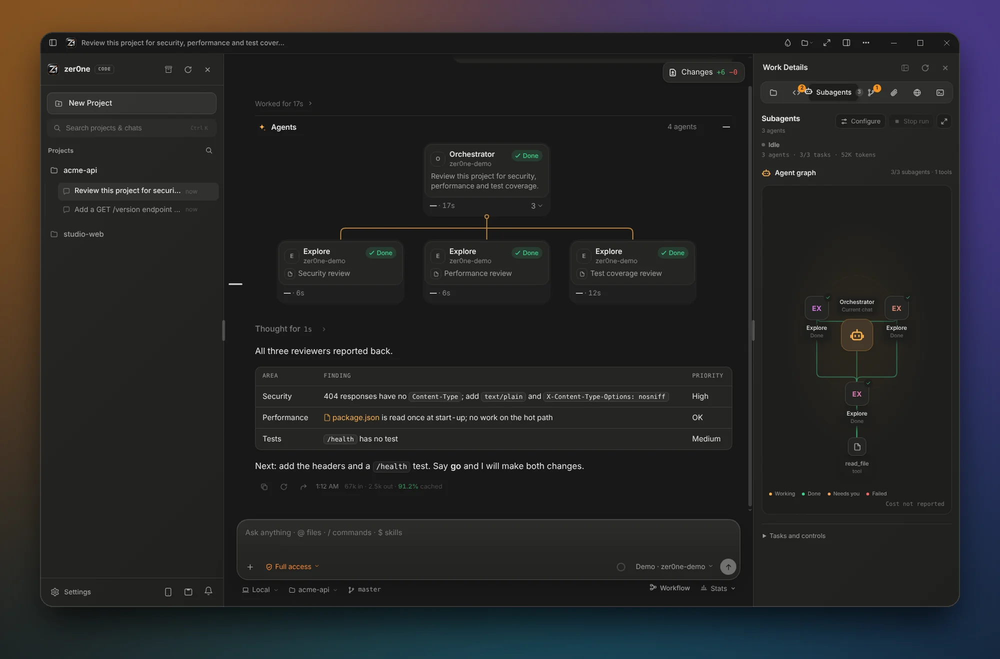
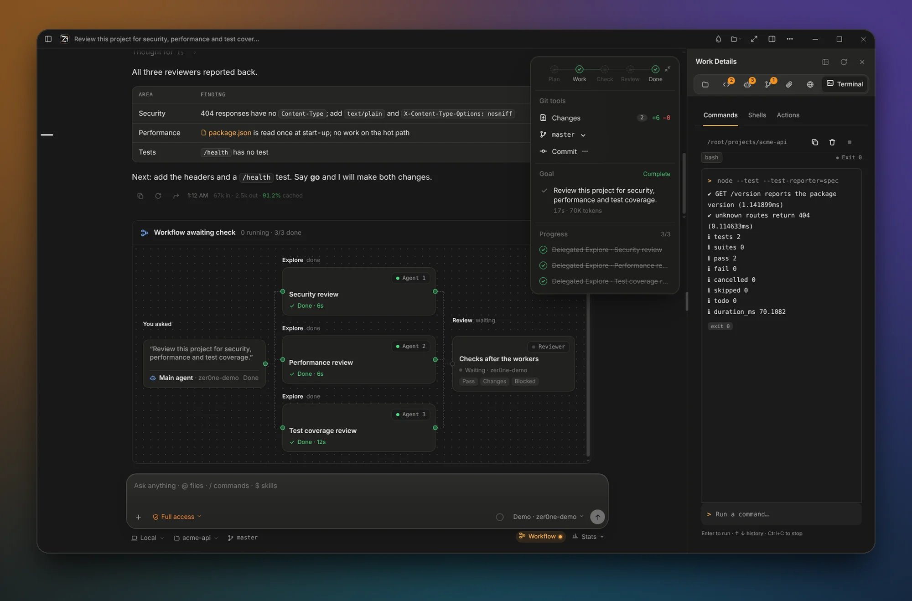
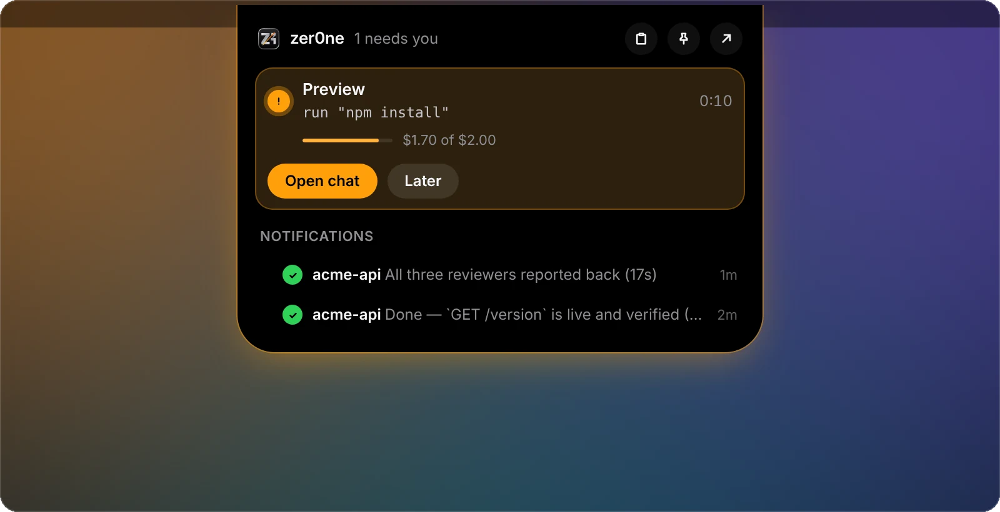
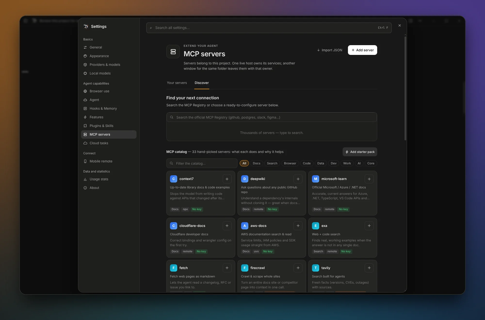
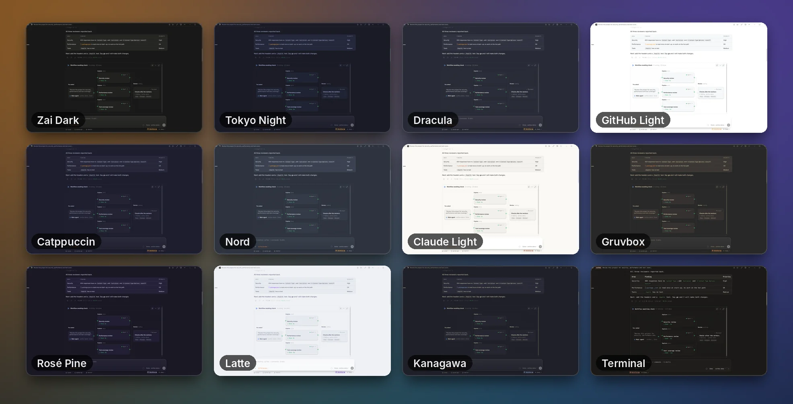
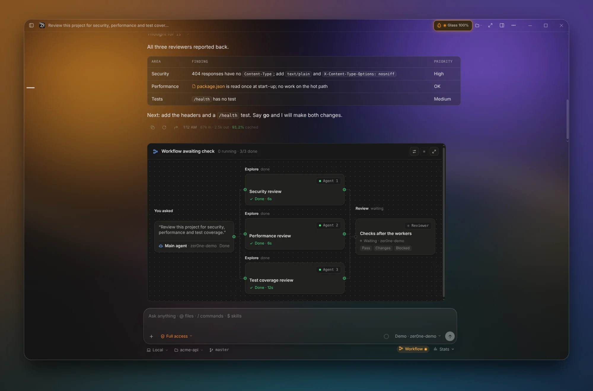

cloud · subscription · local
The desktop coding agent for every model
Plans, edits, runs your tests in a sandbox and shows the diff. You approve, review and undo.
Open source, MITWindows 10 and 11, 64-bitVersion 0.3.0

Why zer0ne Code
Your models, your machine, your call
Every model, one picker
46 plan and subscription sign-ins, 54 API-key presets and any OpenAI-, Anthropic- or Gemini-compatible endpoint.
Keep working for $0
Switch the same chat to a local GGUF model on zer0ne Engine (llama.cpp), Ollama or LM Studio, mid-session.
A team, not a chatbot
Subagents, parallel workers in isolated Git worktrees and an independent reviewer, shown as a live agent graph.
You stay in control
Approvals, an OS command sandbox, project command rules, per-turn checkpoints and hunk-level undo.
74 seconds
See a real session, start to finish
Real app footage, driven by a scripted demo model.
Any model
Bring the plans you already pay for
Sign in, add API keys, or point at your own endpoint. Enabled models appear in one picker, and you can switch at any message.
- Plans and subscriptions: ChatGPT, Claude, Google Antigravity, GitHub Copilot, Cursor, OpenRouter, Kimi, MiniMax, Grok and more, through each vendor's own login.
- API keys: key pools rotate past rate-limited keys, and fallback models take over in order when one is exhausted.
- Custom endpoints: Chat Completions, Responses, Anthropic Messages and native Gemini formats.

Local LLMs
Out of credits or offline? Keep going
Keep the same project and conversation on your own hardware.
- zer0ne Engine bundles llama.cpp, installs on demand and fits each model's context to available memory.
- Fit check rates any Hugging Face model for this PC before you download. Downloads are checksum-verified.
- Offline fallback continues on your local helper model when the cloud cannot be reached.
- Local Host router serves your local models as OpenAI- and Anthropic-compatible APIs for other tools.

Agents and workflows
Give a chat a team with /workflow
The main agent hands focused work to specialists, each with its own context, tools and model. Add your own per project in .zer0ne/agents.


- DelegateWorkers run in parallel. Coding workers get their own Git branch and worktree, so your checkout stays clean.
- ReviewA separate reviewer checks the workers' changes before anything is reported as done.
- EvidenceEvery task records commands, exit codes and check snapshots you can inspect.
- ApplyReview the diff, then apply it with an Undo checkpoint, or discard the worktree.
AI Dock
A Dynamic Island for your agents
- See what each project is thinking, writing or running, with checks, changed files, context and cost.
- Act without opening the app: approve, reject or answer, and stop or reply to a running agent.
- Drop files, images or text on it and ask about them.
- Stay discreet: it hides project details while you present or share your screen.

Tools
MCP, skills and hooks built in
- MCP: a catalog of 33 ready-to-configure servers, official MCP Registry search and interactive MCP apps in isolated frames.
- Skills and plugins: install from a folder, a Git URL or the marketplace, or record a workflow into a skill.
- Hooks: run your own commands around prompts, tools and stops, with templates for formatting, linting and protecting
.env. - Browser agent: tests the app it just changed, with web search and fetch.

Lean context
Long sessions stay fast and affordable
- RTK Token SaverCompresses tool output before it reaches the model. Errors and stack traces are kept, and the full output stays in the chat card.
- Prompt cacheKeeps the request prefix stable and warm, and reports cache reads and writes.
- Auto CompactSummarises older turns at a percentage or token ceiling so the session keeps going.
- Repository mapStarts each task with a map of about 1,000 tokens covering folders, key files and symbols.
- Usage statsTokens, cache hits and cost per model, exportable as CSV.
Make it yours
33 themes and real Liquid Glass
Choose accent colours, fonts and an importable theme JSON, set a photo or animated GIF as the background, or turn on real window transparency from 0 to 100%.


Safety by design
Nothing happens behind your back
Access modes
Chat answers only. Agent reads freely and asks before edits, commands and MCP. Full access is your choice.
Command sandbox
Commands run in an OS sandbox and are marked SANDBOX in the chat.
Command rules
allow:,ask:anddeny:lines per project. Allow lines from a repository wait until you trust them.Secrets
API keys are encrypted with a key your OS protects, and commands start without secret-looking environment variables.
Checkpoints
Every turn can be restored file by file.
Isolated pages
The UI runs sandboxed with a single, permission-checked bridge to the app.
And more
The rest of the toolbox
- Mobile Remote
- Computer Use
- Side Chat
- Benchmark with 37 coding tasks
- Cloud tasks
- Quick prompt
- Profile backup and restore
- CI and review events
- Headless CLI
Install
Get zer0ne Code
Windows 10 or 11, 64-bit.
Windows installer
Installs per user without an administrator prompt. Uninstalling keeps your chats and settings.
DownloadWindows installer
No installer has been published yet. It will appear on the Releases page. Until then, build the app from source.
Build from source
Requires Node.js 22 or newer.
git clone https://github.com/uranrog-01/zer0ne-Code
cd zer0ne-Code
build.bat run